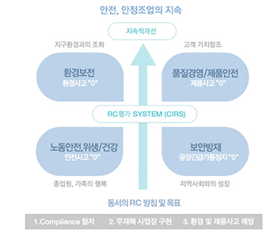
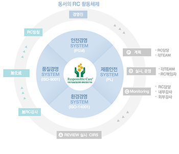

환경안전활동
-
Asahi KASEI 그룹 RC 방침
환경보전, 제품안전, 보안방재 및 노동안전위생.건강은, 경영의 가장 중요한 과제의 하나로 인식하고, 개발로부터 폐기까지 이르는 제품 Life Cycle 모두에 걸쳐, 해외를 포함한 모든 사업활동에 있어서 이들을 배려한다.
제품의 안전성을 평가하고, 안전정보를 제공함으로써 제품안전을 확보한다.
안전조업 및 보안방재 기술의 향상에 노력하여 종업원과 지역사회 안전을 확보한다.
작업환경개선과 설비의 근본적인 안전화에 노력하여 노동재해를 예방한다.
쾌적한 직장환경의 조성에 노력하여 건강유지의 유지와 증진을 지원한다.
-
RC를 통한 환경안전 활동
동서석유화학은 RC 활동 도입전 공정안전관리제도(PSM)와 몇 가지 자체 프로그램을 통하여 안전보건 및 환경관리 활동을 실행하고 있었습니다. 그러나 2000년 이후 국내 석유화학업계에 안전보건 및 환경활동에 대한 기업의 자율 활동 프로그램인 RC(Responsible Care) 도입에 대한 요구가 증가되고 있었습니다. 이에, 당사는 2002년 7월 RC추진발대식을 기점으로 안전보건, 환경 및 제품안전 부문에 걸쳐 RC활동을 도입 추진하여 왔습니다.
도입 초기부터 당사 사장이 한국RC협의회 부회장으로 활동하는 등 각종행사와 후원 활동에도 적극 참여하였으며, 내부적으로는 안전 환경관리의 지속적 발전을 위한 평가시스템(CIRS, Continuous Improvement Rating System), 공정안전관리제도 (PSM), 품질관리시스템(ISO 9001), 환경관리시스템(ISO14001) 등을 도입 PDCA 사이클을 실천하는 RC 문화정착에 주력하고 있습니다. 또한, 일본 주주사인 아사히 카세이(旭化成, 이하 旭化成)의 RC 방침에 따른 목표를 수립 활동하고 있으며, 정기적인 지도와 공조, Compliance 및 Global 요구대응철저는 물론 새로운 테마에도 적극적으로 임하고 있으며, 앞으로도 전사가 하나가 되어 노력하여 Global Top 수준으로 RC 레벨을 향상하여 무재해, 무사고 사업장을 지속시킬 것입니다.